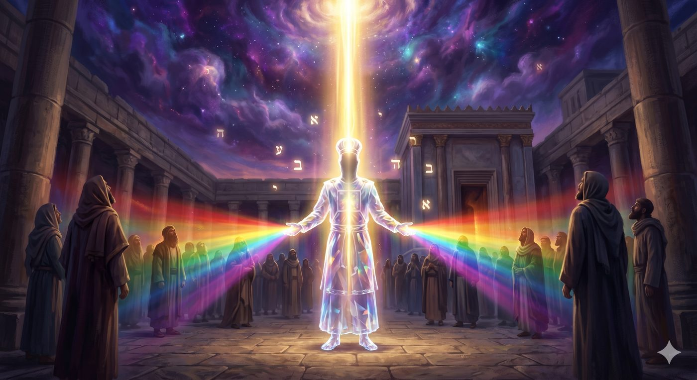
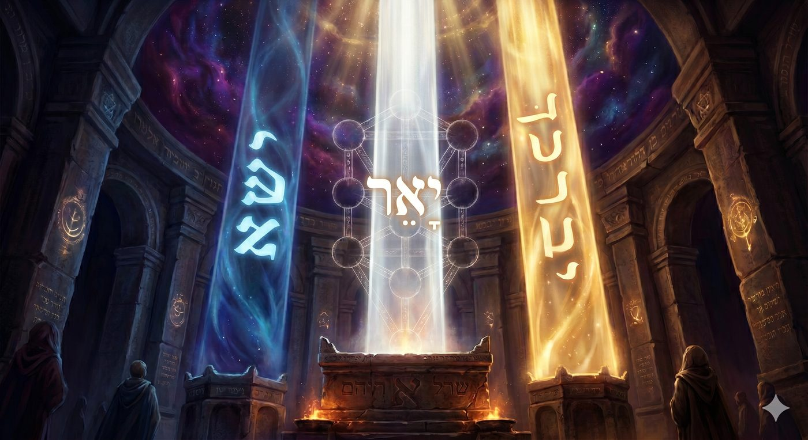
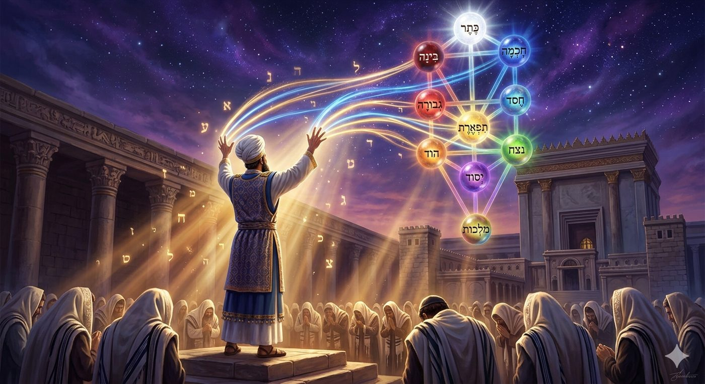
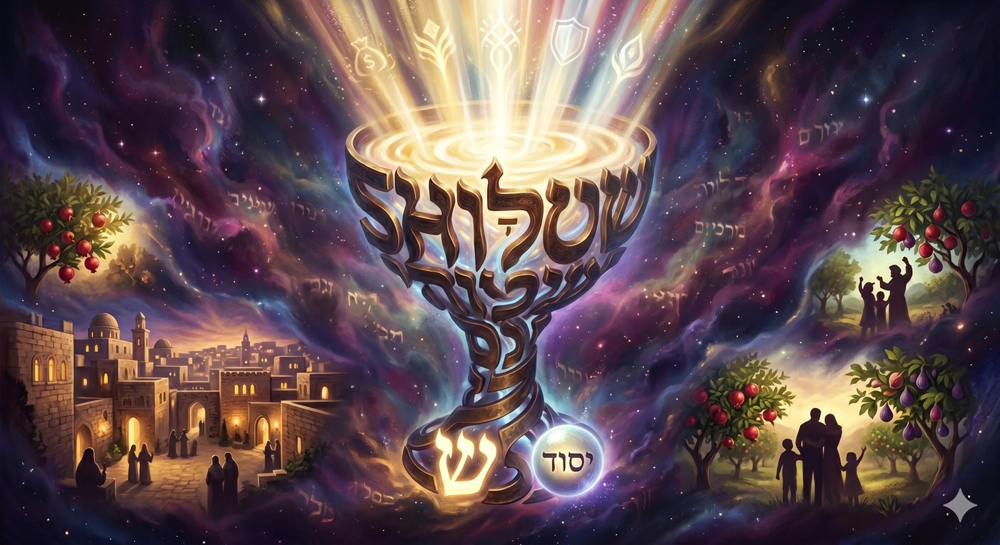
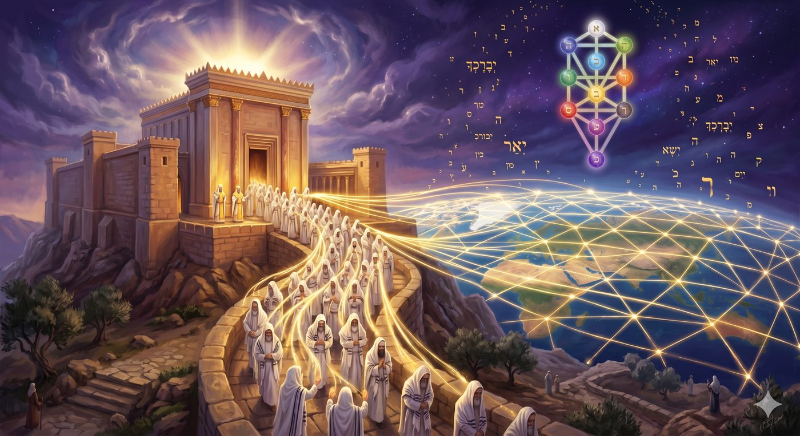

Devenir un canal pour le Divin : le vertige de la Birkat Kohanim
Avez-vous déjà ressenti le vertige de n'être qu'un simple numéro au sein d'une masse anonyme? Dans un monde qui nous réduit si souvent à des statistiques ou des fonctions, comment une âme peut-elle préserver sa dignité et sa singularité absolue sans pour autant se couper de sa communauté ? Et si la véritable réhabilitation de notre identité ne passait pas par l'affirmation de notre ego, mais par notre capacité à devenir un canal de lumière pour les autres ?
C’est par cette tension profondément humaine que s’ouvre notre paracha. Elle débute par un commandement qui ne paraît, à première vue, qu’administratif: « Nasso et roch Bné Guéchon » (Bamidbar 4:22), "Dénombre la tête des fils de Guéchon". Mais l’expression « Nasso et roch », littéralement "lève la tête", est loin d'être un simple comptage. C'est exactement la même expression utilisée pour Yossef dans la prison de Pharaon (Béréchit 40:13), où elle annonce la grâce et la réhabilitation. La Torah nous enseigne ici un principe fondamental : lorsque D.ieu ordonne le dénombrement des Lévites, Il ne les compte pas, Il relève leur tête. Il réhabilite chaque âme dans sa singularité pour la préparer à sa mission.
Mais comment cette âme, une fois réhabilitée, s'inscrit-elle dans le divin ? Nasso, la paracha la plus longue de la Torah (176 versets), juxtapose pour y répondre plusieurs thématiques apparemment disparates et notamment celles de la Sota (la femme soupçonnée d'infidélité), du Nazir (celui qui se sépare du vin et du monde), et enfin de la Birkat Kohanim (la bénédiction sacerdotale). Cette architecture n'a rien d'accidentel, elle trace l'arc spirituel de l'homme. Le Maharal de Prague, dans son Nétiv HaAvoda (chapitre 11), y voit la structure même de l'âme humaine : elle tombe et s'englue dans la matière (la rupture de la Sota), cherche sa réparation dans un effort individuel de séparation (le Nazir, un individu qui se consacre à la sainteté durant un temps limité), pour finalement s'élever et recevoir la lumière d'en haut dans sa dimension collective à travers un intermédiaire consacré dont la tête a été relevée : c'est la Birkat Kohanim.
Et cette paracha porte en elle un écho calendaire puissant. Nasso est toujours lue la semaine qui suit immédiatement Chavouot, le don de la Torah. Ce placement n'est pas anodin, il vient répondre à une question cruciale : maintenant que la foudre du Sinaï est passée, maintenant que vous avez reçu la Parole, comment la Présence divine va-t-elle continuer à se déverser dans la banalité de votre vie quotidienne ?
Ce chiour explore, avec l’aide du Ciel et de nos Maîtres, la Birkat Kohanim (Bamidbar 6:24-26). Nous l'étudierons non pas comme une simple formule de bienveillance, mais comme une structure ontologique précise. À travers les éclairages du Zohar, du Ari z"l, du Ramhal, du Shem MiShmuel, du Sfat Emet et du Tanya, nous découvrirons comment les dix doigts du Cohen incarnent les dix Sefirot, ouvrant un canal direct entre le monde divin et la communauté d'Israël. La thèse qui s'offre à nous est vertigineuse : la bénédiction sacerdotale n'est pas un souhait humain, c'est un acte divin qui traverse l'homme, pourvu que celui-ci accepte de s'effacer pour laisser couler la vie et réorienter l’énergie humaine vers sa source divine.
Nasso et la tête levée : le recensement comme dignification de chaque âme de la Birkat Kohanim
Ha-Kohanim, Ha-Levi'im, Israël : la chaîne de transmission de la Birkat Kohanim
Amor lahem : "Parle-leur ainsi", quand la Torah révèle la Birkat Kohanim mot à mot
L'architecture des trois versets de la Birkat Kohanim : 3-5-7 mots, les trois colonnes des Sefirot
Les soixante lettres et les soixante myriades d'Israël : la Birkat Kohanim comme miroir du peuple
Les dix doigts et les dix Sefirot : le Cohen comme Arbre de Vie incarné (Birkat Kohanim, Zohar 145a)
Le Cohen comme canal de la Birkat Kohanim, non comme source : les kavanot de l'Ari z"l
Le Ramhal et la nature divine de la Birkat Kohanim : du Keter jusqu'à Malkhout
Chalom comme vaisseau suprême de la Birkat Kohanim : la Tanya et le kli mah'azik berah'a
Dimension messianique : la Birkat Kohanim universelle et le Temple de la fin des temps
Avant de comprendre la structure de la Birkat Kohanim, il faut comprendre qui peut la transmettre et pourquoi. La Torah ne dit pas "un homme pieux bénira Israël". Elle dit « Amor el-Aharon ve'el-banav lemor : koh tebarkhou et bné Israël » (Bamidbar 6:23), "Parle à Aaron et à ses fils en disant : c'est ainsi que vous bénirez les fils d'Israël".
Posons d’emblée, par nécessité, la grille de lecture du Zohar, relaté par le Ari Z’’l dans son Etz Haim. Le Cohen, descendant d'Aaron, occupe dans la structure du peuple juif une position analogue à celle du H'essed (la bonté, la générosité, le flux vers l'extérieur) dans l'Arbre des attributs divins. Le Lévite, lui, correspond à Gvoura (la rigueur, le discernement, la limite). Et Israël dans son ensemble correspond à Tiferet (la beauté, l'harmonie, l'équilibre).
Aaron lui-même, l'ancêtre de tous les Cohanim, est décrit dans les Pirké Avot (1:12) comme ohev chalom verodef chalom, ohev et habriot umkarvan laTorah, "celui qui aime la paix et court après elle, qui aime les êtres et les rapproche de la Torah". Étrangement, ces qualités ne forment pas un portrait de rigueur sacerdotale mais un portrait d'amour. Et le Zohar (Nasso 147b), selon son enseignement, tire de cette exigence une conséquence qui touche à la halah’a (Magen Avraham) : un Cohen qui n'aime pas le peuple, ou qui n'en est pas aimé, ne devrait pas lever les mains pour bénir le peuple. L'amour n'est pas une vertu morale surajoutée, c'est la condition physique de la transmission.
Le Shem MiShmuel (Rabbi Shmuel Bornsztain de Sochatchov, Nasso 5672) prolonge cette doctrine en observant que le Cohen doit se tenir face au peuple pendant la Birkat Kohanim, visage tourné vers l'assemblée, et pas vers l'arche sainte. Ce détail gestuel est lourd de sens : la bénédiction va du Cohen vers le peuple, non du peuple vers D.ieu. Autrement dit, pendant la Birkat Kohanim, le flux est descendant. Il part de la source divine, traverse le Cohen, et atteint chaque âme individuellement. Et le Cohen ne peut faire face au peuple que s'il l'aime.
Pourquoi faut-il précisément un Cohen, descendant d'Aaron, pour transmettre cette bénédiction ? Le Sfat Emet (Rav Yehouda Aryeh Leib de Ger, dans son chiour sur Nasso 5652) répond avec une délicatesse remarquable. Il enseigne que la lumière de la Birkat Kohanim ne s'arrête pas dans le Cohen, elle le traverse. Le Cohen est comme un cristal : il ne produit pas la lumière, il la laisse passer. Et pour qu'un cristal laisse passer la lumière, il faut qu'il soit transparent, c'est-à-dire libre de toute opacité spirituelle. La condition du Cohen n'est pas la sainteté isolée, c'est la disponibilité totale.

La Birkat Kohanim révèle que la transmission du divin exige une âme rendue transparente par l'amour : sans l'amour d'Aaron pour son peuple, les mains se lèvent mais le canal reste fermé.
Un détail textuel que l'on remarque rarement mérite toute notre attention. La Torah ne se contente pas d'ordonner aux Cohanim de bénir Israël. Elle leur dicte la bénédiction mot à mot, lettre à lettre. Koh tebarh’ou, "c'est ainsi que vous bénirez", suivi des trois versets exacts (Bamidbar 6:24-26). Ce niveau de précision et de détail est chirurgical.
Pourquoi cette précision extrême ? Le Maharal (Nétiv HaAvoda, chapitre 11) l'explique par la nature même de la bénédiction divine : elle ne peut pas être approximative parce qu'elle n'est pas humaine. Quand un homme bénit son prochain avec ses propres mots, il exprime une intention. Quand un Cohen prononce la Birkat Kohanim, il récite une structure que D.ieu Lui-même a composée pour s'y investir. Le Talmud Bavli (Sota 38a) va dans ce sens en enseignant que pendant la Birkat Kohanim, la Cheh'ina (la Présence divine) repose entre les mains des Cohanim.
Et ce n'est pas une métaphore poétique. C'est une affirmation technique sur la nature de la bénédiction : le Cohen ouvre une écluse et laisse déverser la brah’a.
Et le mot koh (כֹּה), "ainsi", mérite lui aussi attention. En hébreu, koh désigne une manière précise, une configuration exacte. On retrouve cette même racine dans la vision d'Ezéchiel et dans les prescriptions du Temple. J'ajoute personnellement que ce koh indique que la bénédiction ne vaut que lorsqu'elle est prononcée dans la forme prescrite, c'est-à-dire quand le Cohen s'efface devant la structure et cesse d'y projeter sa personnalité.
C'est pourquoi la tradition halah'ique insiste sur le fait que le Cohen prononce la bénédiction à voix haute, que le peuple réponde amen à chaque verset, et que personne ne regarde les mains du Cohen pendant la cérémonie. Chacune de ces règles renforce la même logique : la Birkat Kohanim est une opération spirituelle précise, et toute déviation de la forme peut en perturber la transmission.
La précision extrême de la Birkat Kohanim révèle que ce n'est pas une bénédiction humaine approximative mais une structure divine que le Cohen est appelé à activer, et dont il ne peut changer un seul mot sans en altérer la nature.
Les trois versets de la Birkat Kohanim forment une architecture progressive d'une précision stupéfiante.

Le premier verset (Bamidbar 6:24) est Yevareh'eha Hachem veychmereh’a, "Que Hachem te bénisse et te garde." Il comporte trois mots (hors Nom divin) et quinze lettres. Ce verset est associé à H'essed, la générosité, la colonne de droite de l'Arbre des Sefirot. Il est ascendant dans sa structure : la bénédiction descend du haut (yevareh'eh’a) et la garde monte du bas (veychmereh’a). La bénédiction et la protection forment le premier niveau du flux divin.
Le deuxième verset (Bamidbar 6:25) est Ya'er Hachem panav eleh’a veiyh'uneka, "Que Hachem illumine Sa face vers toi et te fasse grâce." Il comporte cinq mots et vingt lettres. Ce verset est associé à la colonne centrale, celle de Tiferet (beauté, harmonie, lumière). Le mot ya'er, "illumine", renvoie directement à la lumière du visage divin, et le visage (panim, פָּנִים) est dans la mystique la métaphore classique de Tiferet, l’attribut de la beauté et de la révélation.
Le troisième verset (Bamidbar 6:26) est Yissa Hachem panav eleh’a veyassem leh’a chalom, "Que Hachem lève Sa face vers toi et t'établisse la paix." Il comporte sept mots et vingt-cinq lettres. Ce verset est associé à la colonne de gauche, Gevoura, mais son couronnement par le mot chalom le projette vers Malh’out (le Royaume), le dernier attribut, celle qui reçoit et manifeste tout ce qui a été transmis par les attributs supérieurs.
La progression 3-5-7 est celle des premiers nombres impairs positifs, et leur somme, 15, correspond à la valeur numérique de Yod-Hé (י-ה), les deux premières lettres du Tétragramme. La progression 15-20-25 dessine une escalade régulière de 5 en 5 : et 5 est le nombre des doigts d'une main, chaque main correspondant à une colonne de l'Arbre des attributs. La somme totale des lettres, 60, correspond aux soixante myriades d'Israël sortis d'Égypte, soit six cent mille âmes.
Autrement dit, l'architecture même de la bénédiction est conçue pour contenir l'ensemble du peuple. Chaque lettre porte une âme. Chaque verset porte une colonne de l'Arbre de Vie. Et les trois Noms divins inclus dans les trois versets forment le triangle H'essed-Din-Emet (bonté, jugement, vérité), le cadre fondamental de toute existence selon la doctrine mystique du Ari z"l.
L'architecture des trois versets de la Birkat Kohanim est une carte vivante des Sefirot gravée dans la langue même de la bénédiction, où chaque mot porte une émanation divine.
Le Zohar, dans sa lecture de Nasso (145a), enseigne que les soixante lettres de la Birkat Kohanim correspondent aux soixante myriades d'Israël, c'est-à-dire aux six cent mille âmes qui reçurent la Torah au Sinaï. Cette fausse coïncidence numérique est la signature d'une conception de la bénédiction comme miroir : chaque lettre de la bénédiction est l'image d'une âme particulière dans le peuple.
Lorsque le Cohen prononce la Birkat Kohanim, il "soulève" chacune de ces soixante lettres vers sa source divine et avec elle, l'âme qu'elle porte. L'acte de bénir est un acte de recensement mystique : il "compte" les âmes comme des réalités spirituelles que le flux divin doit atteindre. On voit ici le lien profond entre le nasso et roch du début de la paracha (le recensement qui lève la tête) et la Birkat Kohanim de sa fin : les deux actes relèvent de la même logique de dignification individuelle au sein du collectif.
Je rajoute personnellement que cette correspondance entre les soixante lettres et les soixante myriades révèle quelque chose d'essentiel sur la nature de la prière collective. Dans la tradition juive, la prière publique (tefila betsibbour) a une efficacité que la prière individuelle ne peut pas atteindre. Ce n'est pas une question de volume ou de pression sociale. C'est une question structurelle : certaines réalités spirituelles ne peuvent être "soulevées" que collectivement. La Birkat Kohanim ne peut se prononcer que devant un minyan (quorum de dix hommes) précisément parce que sa structure encode le peuple entier (et selon le Rama, uniquement à un moment précis, lors des moadims ou bien à yerouchalaim chaque jour selon la coutume du lieu).
Les soixante lettres de la Birkat Kohanim sont la forme visible des soixante myriades d'Israël : bénir le peuple, c'est nommer chaque âme devant son Créateur, individuellement et sans exception.
Nous arrivons au cœur mystique de ce chiour. Le Zohar (Nasso 145a), selon son enseignement caractéristique, révèle que les dix doigts du Cohen dressés pendant la Birkat Kohanim activent les dix attributs divins. L’image est belle mais c’est surtout une affirmation sur la structure de la réalité.
Les dix Sefirot sont les dix attributs divins à travers lesquels D.ieu gouverne et crée le monde : Keter (la Couronne, volonté première), H'okh'ma (la Sagesse), Bina (la Compréhension), H'essed (la Bonté), Gvoura (la Rigueur), Tiferet (la Beauté), Netzah' (l'Éternité), Hod (la Gloire), Yessod (le Fondement) et Malh’out (le Royaume). Ces dix attributs forment l'Arbre de Vie kabbalistique, la structure invisible qui sous-tend toute réalité créée, de manière fractale (car tout est composé de ces 10 niveaux)

Le Cohen, en levant ses dix doigts, incarne cet Arbre dans son propre corps. La main droite porte les cinq Sefirot de la colonne de droite, et la main gauche porte les cinq Sefirot de la colonne de gauche. La configuration spécifique des doigts, que les Cohanim reproduisent selon la tradition transmise de génération en génération, correspond à des configurations précises des flux séfirotiques. Les doigts ne sont pas levés au hasard. Leur position exacte, telle qu'elle est transmise par la tradition orale et codifiée par les décisionnaires, reproduit la structure interne de l'Arbre.
Le Ari z"l (Sha'ar HaMitsvot, paracha Nasso) précise les kavanot (intentions kabbalistiques) qui accompagnent chaque mouvement des mains. Pendant le premier verset, le Cohen doit avoir en vue le flux de H'essed descendant de Keter vers le monde, le don pur sans condition. Pendant le deuxième verset, il contemple le flux de Tiferet illuminant le "visage" (la révélation de la beauté divine dans le monde visible). Pendant le troisième verset, il laisse couler le flux de Yessod dans Malh’out, qui reçoit la paix comme son état accompli, sa plénitude.
J'ajoute personnellement, à partir de la lecture croisée de ces sources, que la position du Cohen pendant la Birkat Kohanim réalise ce que le dessin de l'Arbre des Sefirot représente abstraitement. Le corps du Cohen est littéralement l'Arbre de Vie debout dans l'assemblée. Sa tête correspond à Keter. Son visage correspond à Tiferet. Ses mains correspondent aux deux colonnes latérales. Et son centre, là où les deux bras se rejoignent dans la colonne du milieu, correspond à Yessod, d'où coule la bénédiction finale, le chalom.
Cette correspondance corps-Arbre n'est pas propre à la Birkat Kohanim. Elle est le fondement de toute une doctrine de l'anthropologie mystique, selon laquelle le corps humain a été créé à l'image de l'Arbre des Sefirot (Etz H'aïm, Ari z"l, Chaar Drouchei haNekoudot). Mais dans la Birkat Kohanim, cette correspondance est activée rituellement et consciemment pour la première fois dans l'histoire du service divin.
Dans la Birkat Kohanim, le Cohen n'est pas un homme qui prie : il est l'Arbre de Vie debout dans la communauté, ses dix doigts activant les dix Sefirot comme un luthier accorde les cordes d'un instrument cosmique.
L'une des erreurs les plus fréquentes dans la compréhension de la Birkat Kohanim est de croire que le Cohen bénit de lui-même. Le texte de la Torah la corrige d'une formule décisive : véssamu et chemi al bné Israël va'ani avarekh'em (Bamidbar 6:27), "ils placeront Mon Nom sur les fils d'Israël, et c'est Moi qui les bénirai". Le Cohen place le Nom. D.ieu bénit, la distinction est absolue.
Le Ari z"l (Sha'ar HaMitsvot, Nasso) développe cette distinction dans le détail de ses kavanot. Le Cohen qui monte sur le dukhan (la plateforme surélevée, que la tradition appelle "monter au dukhan" même dans les synagogues modernes) doit avoir accompli plusieurs conditions intérieures avant même d'élever les mains. Il doit avoir en conscience que son rôle est purement instrumental. Il ne convoque pas la bénédiction, il s'ouvre à son passage. Cette intention est la condition d'efficacité de tout l'acte.
La doctrine du Ari z"l est expliquée par la hassidout et en particulier le Sfat Emet (Nasso 5652) qui décrit le Cohen comme un cristal. Pour qu'un cristal transmette la lumière fidèlement, deux conditions sont nécessaires : d'abord qu'il soit transparent (sans opacité morale, sans intention personnelle qui parasiterait le flux), ensuite qu'il soit correctement orienté (face au peuple, les mains dans la configuration prescrite). Ces deux conditions correspondent aux deux exigences de la Birkat Kohanim : la pureté intérieure du Cohen et la précision de son geste.
Le Talmud Bavli (Sota 38a) précise que la Birkat Kohanim doit être prononcée avec joie. Un Cohen dans la tristesse ou la colère ne peut pas bénir avec efficacité. Cette prescription n'est pas sentimentale. Elle reflète la logique mystique de la transparence : la tristesse est une fermeture, et une âme fermée est un cristal opaque.
Les maîtres hassidiques ont souvent souligné que cette structure s'applique à toute forme de transmission spirituelle. Le rav, le maguid, le moré dereh’ (guide spirituel) ne transmettent vraiment que lorsqu'ils ont cessé de penser à eux-mêmes. L'enjeu de la Birkat Kohanim est donc universel : elle enseigne à chaque Juif comment devenir un canal de bénédiction pour son entourage, en s'effaçant pour laisser passer la lumière.
Dans la Birkat Kohanim, le Cohen est le canal le plus efficace quand il est le plus transparent : son effacement personnel n'est pas une humilité accessoire, c'est la condition technique de la plénitude du flux divin.
Le Ramhal (Rabbi Mochéh H'aïm Lousatto, dans son Dereh' Hachem II:6) offre une cartographie de la bénédiction divine qui éclaire de façon décisive la structure de la Birkat Kohanim.
Le Ramhal enseigne que toute bénédiction divine suit un parcours précis. Elle prend sa source dans Keter (la Couronne, la volonté première de D.ieu), traverse les Sefirot supérieures (H'okh'ma et Bina), descend par les six middot inférieures (les six attributs moraux, de H'essed jusqu'à Yessod), et parvient à Malh’out, le Royaume, le réceptacle du monde. C'est là qu'elle se manifeste dans la réalité concrète.
Ce parcours est toujours le même. Mais il ne peut se réaliser que si chaque étape est franchie. Une bénédiction qui s'arrête au niveau de H'essed sans descendre jusqu'à Malh’out reste suspendue dans le monde spirituel, non manifestée dans le monde visible. Et c'est ici que le rôle du Cohen prend tout son sens : il est le dernier maillon du canal. Les Sefirot supérieures agissent invisiblement. La Cheh'ina (la Présence divine, associée à Malh’out) attend à la frontière entre le monde divin et le monde humain. Et le Cohen, par ses dix doigts et sa bouche, ouvre le dernier verrou.
Le Ramhal ajoute (Daat Tevounot §40) que les êtres humains ont été créés précisément pour être des acteurs de cette descente. D.ieu n'a pas besoin d'intermédiaires pour agir dans le monde, mais Il a choisi de requérir la participation humaine pour que les hommes soient co-créateurs de leur propre bénédiction. En d'autres termes, si le Cohen ne se lève pas pour bénir et réaliser une mitsva, la bénédiction reste en attente dans les mondes supérieurs. Elle ne se manifeste pas d'elle-même dans le monde, parce que D.ieu a confié à l'homme la responsabilité d'en être le vecteur.
Cette doctrine est d'une importance capitale pour comprendre pourquoi la Birkat Kohanim est obligatoire (mitsva) et non facultative. Elle n'est pas un geste pieux optionnel conditionné à la bienveillance du Cohen. C'est la fermeture du circuit. Sans elle, le flux divin ne peut pas atteindre sa destination. Et c'est pourquoi les décisionnaires (Choulh'an Arouh’, Orah' H'aïm 128) insistent sur le fait que le Cohen qui évite de monter au dukhan transgresse une mitsva positive de la Torah (bien entendu, s'il le peut).
La doctrine du Ramhal entre ici en résonance avec le calendrier juif. La paracha Nasso vient après Matan Torah pour signifier que les Bnei Israel ne reçoivent pas encore la Torah comme un « don » : ils veulent « l'acquérir » par eux-mêmes, se l'approprier par l'expérience du Daat. (Nous aurons, si D.ieu le veut, l'occasion de revenir sur cette thématique notamment pour éclairer la faute du veau d'or comme résurgence de la faute du premier homme.)
Le Ramhal révèle que la Birkat Kohanim est le maillon humain indispensable dans la chaîne de la bénédiction divine : D.ieu a voulu que Sa grâce atteigne le monde à travers la liberté et l'amour d'un Cohen debout réalisant une mitsva et d’un peuple réceptif.
La Birkat Kohanim se termine par un seul mot : chalom (שָׁלוֹם), la paix. Ce n'est pas une conclusion sentimentale. C'est la révélation de l’attribut final que la Birkat Kohanim entière est venue activer.
La Tanya (Igeret HaKodech chapitre 15, Rabbi Chnéour Zalman de Lyadi, le Admour HaZaken) formule cette doctrine avec une rigueur qui n'a pas d'équivalent dans la littérature hassidique. Le Admour HaZaken enseigne que le Talmud Bavli (Ouktsine 3:12, la dernière mishna du dernier traité de la Michna) énonce une vérité cosmique : "Lo matsa HaKadoch Baroukh' Hou kli mah'azik berah'a le'Israël ella haChalom", "D.ieu n'a pas trouvé de meilleur vecteur de bénédiction pour Israël que la paix". La Tanya commente cette mishna en expliquant que le chalom n'est pas l'absence de conflit. C'est la réalisation de Yessod (le Fondement) dans Malh’out (le Royaume), l'union de la puissance divine avec son réceptacle dans le monde.
Sans chalom, aucune bénédiction ne peut rester dans le monde. Tout comme un vase brisé ne peut contenir d'eau, une communauté divisée ne peut retenir la bénédiction qui lui est versée. La Birkat Kohanim commence par H'essed (la bonté, le don), monte vers Tiferet (la beauté, la lumière), et se conclut par chalom parce que c'est dans la paix que la bénédiction trouve son keli, son contenant.
Le Talmud Bavli (Sota 17a) ajoute une dimension encore plus bouleversante. Il enseigne que D.ieu accepte de laisser effacer Son propre Nom, lors du rituel de la Sotah, pour rétablir le chalom, la paix entre deux époux en cas de soupçon d’adultère. Le Nom divin est la manifestation de la présence de D.ieu dans le monde visible. Et D.ieu choisit de laisser effacer cette manifestation si cela permet à deux êtres humains de retrouver la paix entre eux. La conclusion est foudroyante : la paix entre les êtres humains est plus précieuse aux yeux de D.ieu que la préservation de Son propre Nom dans le monde, car sans elle il ne peut y avoir de brah’a.

C'est pourquoi la Birkat Kohanim se clôt sur le mot chalom. Elle ne s'achève pas sur une formule de puissance, de sagesse ou de prospérité. Elle s'achève sur la paix, parce que la paix est le seul état dans lequel toutes les autres bénédictions peuvent prendre racine et demeurer. Les médecines régénératives contemporaines ont découvert que le stress chronique détruit les cellules, que l'état de paix intérieure favorise la guérison et la régénération. La Torah l'énonce depuis trois millénaires : sans chalom, aucune bénédiction, même celle que D.ieu déverse Lui-même, sans interruption, ne peut se fixer dans la chair.
Le Chalom qui conclut la Birkat Kohanim est le réceptacle cosmique sans lequel aucune bénédiction divine ne peut demeurer dans le monde humain, et dont la Torah a fait la condition de toutes les autres grâces.
Nous touchons ici à la dimension la plus haute de ce chiour. Toute la structure mystique de la Birkat Kohanim que nous avons explorée, les dix doigts, les dix Sefirot, les trois colonnes, les soixante âmes, le canal du Cohen, le vaisseau du chalom, pointe vers un horizon qui n'est pas encore accompli dans le monde mais qui est déjà inscrit dans la structure du texte.
Le prophète Yechayahou (Isaïe 61:6) annonce : "Veàtem kohanei Hachem tikkaré'ou", "Vous serez appelés prêtres de Hachem". Ce verset décrit l'ère messianique comme un moment où l'ensemble du peuple d'Israël accèdera au statut de Cohen. Il y aura peut-être encore une distinction entre Cohen, Lévite et Israël (les décisionnaires débattent de ce point), mais chaque membre du peuple aura intériorisé le secret du canal, la capacité d'être transparent à la lumière divine.
Le Shem MiShmuel (Nasso 5672) commente cette prophétie en soulignant que ce qui rend un Cohen capable de bénir aujourd'hui, c'est sa descendance d'Aaron. Mais ce qui rendra l'ensemble du peuple capable de bénir à l'ère messianique, c'est le travail intérieur accompli par chaque génération. Chaque Cohen qui monte sur le dukhan avec la bonne intention inscrit dans le tissu de la réalité un peu plus de transparence collective. Et c'est cette accumulation de transparences qui permettra un jour au peuple entier d'être kohanei Hachem.

Le Zohar (Nasso 147a), selon son enseignement, décrit la Birkat Kohanim du Temple messianique comme une bénédiction qui descendra non seulement sur Israël mais sur l'ensemble de l'humanité. Les soixante lettres de la bénédiction, qui correspondent aujourd'hui aux soixante myriades d'Israël, s'élargiront pour embrasser toutes les nations selon la vision universelle des prophètes.
Dans ce contexte, les grandes mutations de notre époque prennent un relief particulier. Le monde « moderne » réalise à l'échelle technologique et statistique ce que la Birkat Kohanim contredit à l'échelle spirituelle. La bénédiction sacerdotale affirme que chaque âme est unique, portée par une lettre particulière du texte divin. Là où les algorithmes agrègent et moyennent, la Torah individualise et lève. Les techniques d'optimisation de soi contemporaines, elles aussi, proposent une voie vers la transparence de l'ego, mais leur limite est qu'elles restent autoréférentielles : elles optimisent le moi pour le moi. La Birkat Kohanim propose un renversement radical : la transparence n'est pas une performance personnelle mais un don fait à la communauté. Le Cohen ne s'efface pas pour lui-même, il s'efface pour que le peuple soit béni.
Et peut-être est-ce cela, en dernière analyse, le secret le plus profond de la Birkat Kohanim : elle nous enseigne que la grandeur humaine ne consiste pas à accumuler la lumière pour soi, mais à en être le canal pour les autres. Dans un monde obsédé par la performance individuelle, par l'accumulation de compétences et la maximisation de l'impact personnel, la figure du Cohen debout sur le dukhan, les mains levées vers un peuple qu'il aime et vers lequel il se tourne entièrement, est une leçon de civilisation.
La Birkat Kohanim est le prototype de la bénédiction messianique : une lumière qui ne s'arrête pas à la porte du Temple mais qui, un jour, couvrira la terre comme les eaux couvrent la mer (Yechayahou 11:9).
Ce que toutes ces lectures nous révèlent en commun, c'est que la Birkat Kohanim n'est pas une simple cérémonie. C'est une opération cosmique. Le Cohen n'est pas un officiant récitant d'antiques formules, il est le dernier maillon visible d'une chaîne qui s'origine dans la Volonté divine pure pour aboutir dans l'âme la plus intime de chaque membre d'Israël.
Le Sinaï a révélé la Torah. Le Michkan a révélé la Présence divine dans l'espace. Mais la Birkat Kohanim, elle, révèle un mystère peut-être plus grand encore : D.ieu a besoin de l'homme pour que Sa bénédiction atteigne le monde. Par amour absolu, Il a voulu que Ses créatures soient les co-créatrices de leur propre lumière.
Nous posions, au début de ce chiour, la question de notre dignité face à une réalité qui nous réduit souvent à des numéros. La réponse éclate ici dans toute sa splendeur : la véritable élévation de notre être, notre Nasso et roch, ne consiste pas à gonfler notre ego, mais à devenir le canal irremplaçable par lequel le divin coule vers les autres.
C'est cette même vérité viscérale qui se joue à l'échelle de nos foyers. Lorsque les parents posent leurs mains sur la tête de leurs enfants, sous le talit de la Birkat Kohanim à la synagogue ou chaque vendredi soir à la maison, ils reproduisent cette architecture divine. Ils deviennent les vecteurs du Daat, cette connaissance intime et incarnée de la Présence divine dans le réel. Le principe même de la Brah'a est là : particulariser à chaque enfant ce flux infini, lui transmettre une connaissance du divin qui a été vécue, éprouvée, et qui le relie à sa source, déposer son Daat sur le cerveau de son enfant.
Et en fin de compte, qu'est-ce que la véritable Brah'a si ce n'est la compréhension que D.ieu Havayah est notre D.ieu Elokim, que la vie s'agence au rythme de lois naturelles, rigoureuses, douloureuses parfois, mais qu'elle reste orchestrée par un Créateur bienveillant et rempli d'une volonté de transmettre Son amour à Ses créatures ? Qu'est-ce que la véritable Brah'a si ce n'est de comprendre que ce plan divin, hors norme et surnaturel, s'infiltre dans la vie de chacun d'entre nous et nous révèle ainsi notre mission personnelle, notre compréhension, intime et irréversible, que D.ieu Havayah est notre D.ieu Elokim ?
Lorsque nous comprenons que ce plan divin, infini et surnaturel, s'infiltre jusque dans les détails de notre existence pour nous révéler notre mission personnelle, alors nous avons achevé notre réparation. Nous avons construit ce temple intérieur où D.ieu réside, et d'où Il irradie Sa Brah'a.
"Veàtem kohanei Hachem tikkaré'ou", "Vous serez appelés prêtres de Hachem". Yechayahou (Isaïe 61:6)
Yehi Ratson
Que ce soit Ta volonté, Hachem notre D.ieu et D.ieu de nos pères,
Que ce Chabbat de Nasso nous permette d'être, chacun à notre mesure et dans notre domaine, des Cohanim pour ceux qui nous entourent. Transparents à la lumière, orientés vers l'autre, porteurs d'une paix qui ne nous appartient pas mais que nous pouvons transmettre.
Que ce Chabbat de Nasso, nous permette de recevoir la Brah’a de la compréhension du Divin dans le Réel
Chabbat Chalom !
Rédigé par B.A., à Saint-Mandé le 10 Sivan 5786. Réflexions écrites avec beaucoup d'humilité et l'aide de D.ieu.
Béréchit 40:13 : L'expression « Nasso et roch » (lever la tête) utilisée pour Yossef comme symbole de grâce et de réhabilitation.
Bamidbar 4:22 : L'ordre du dénombrement des Lévites (« Nasso et roch Bné Guéchon »), point de départ de la paracha.
Bamidbar 6:23-27 : Le commandement et le texte exact (mot à mot) de la Birkat Kohanim, précisant que le Cohen place le Nom divin, mais que c'est D.ieu qui bénit.
Yechayahou (Isaïe) 61:6 : « Vous serez appelés prêtres de Hachem », l'horizon messianique où le peuple entier accède au niveau du Cohen.
Yechayahou (Isaïe) 11:9 : La prophétie de la connaissance de D.ieu recouvrant la terre comme les eaux couvrent la mer.
Pirké Avot 1:12 : Le portrait d'Aaron le Cohen, archétype de celui qui « aime la paix et poursuit la paix, aime les créatures et les rapproche de la Torah ».
Sota 17a : L'effacement du Nom divin dans les eaux de la Sota pour rétablir la paix (Chalom) au sein du couple.
Sota 38a : La Chekhina (Présence divine) repose entre les mains des Cohanim ; l'obligation absolue de bénir avec joie.
Ouktsine 3:12 : « D.ieu n'a pas trouvé de meilleur récipient (kli) pour contenir la bénédiction d'Israël que la paix (Chalom) » (Dernière Michna du Talmud).
Zohar (Parachat Nasso, 145a-147b) : Les 60 lettres de la bénédiction correspondent aux 60 myriades d'âmes d'Israël. Les 10 doigts levés correspondent à l'activation des 10 Sefirot. L'obligation pour le Cohen d'aimer le peuple pour que le canal soit ouvert. La vision universelle de la bénédiction à l'ère messianique.
Ari z"l (Rabbi Isaac Louria) – Cha'ar HaMitsvot (Parachat Nasso) : Les kavanot (intentions mystiques) de la bénédiction, décrivant le Cohen comme un canal purement instrumental laissant passer le flux divin.
Ari z"l – Etz H'aïm (Chaar Drouchei haNekoudot) : Le corps humain (et particulièrement celui du Cohen en acte) conçu à l'image de la structure de l'Arbre des Sefirot.
Maharal de Prague – Nétiv HaAvoda (Chap. 11) : La structure de la Paracha (Sota / Nazir / Cohen) reflète le parcours de l'âme humaine (chute / effort / réparation divine) ; la bénédiction est une structure textuelle exacte composée par D.ieu.
Ramhal – Dereh' Hachem (II:6) : Le parcours de la bénédiction à travers les mondes supérieurs, qui s'origine dans Keter pour se manifester dans le monde via Malh'out.
Ramhal – Daat Tevounot (§40) : L'homme comme co-créateur de la bénédiction ; D.ieu a volontairement besoin de la participation humaine (le Cohen) pour faire descendre Sa grâce.
Admour HaZaken (Baal HaTanya) – Igeret HaKodech (Chap. 15) : L'explication profonde du Chalom comme l'union de Yessod et de Malh'out, faisant de la paix le seul réceptacle capable de retenir le flux divin.
Sfat Emet (Nasso 5652) : Le concept du Cohen comme "cristal" : il ne produit pas la lumière mais la laisse passer grâce à sa transparence et à l'absence de volonté propre (ego).
Shem MiShmuel (Nasso 5672) : L'orientation du Cohen face au peuple (et non face à l'Arche) prouvant que le flux est descendant vers l'homme ; le travail des générations pour rendre le peuple entier "transflecteur" du divin à l'ère messianique.
Choulh'an Arouh' (Orah' H'aïm 128) : Les lois encadrant la Birkat Kohanim (obligation de monter au Doukhan, mitsva positive).
Magen Avraham : Un Cohen qui n'aime pas le peuple, ou qui n'est pas aimé de lui, ne doit pas monter bénir.
Rama (R. Moché Isserles) : Mention implicite sur la fréquence de la Birkat Kohanim (fêtes vs quotidien selon les rites ashkénazes ou séfarades).